Type I (Stripped-Envelope) Supernovae#
Type Ib and Type Ic supernovae are core-collapse explosions of massive stars that lost their
hydrogen envelope (Ib: helium remains; Ic: helium is also stripped) before exploding. Their light
curves are powered by the radioactive decay of \(^{56}\mathrm{Ni}\) and are typically a single
peak, roughly two to three weeks after explosion, followed by a decline; unlike Type IIb SNe
(Type II Supernovae) they lack a distinct early shock-cooling peak. All three subtypes on
this page – Ib, Ic and Ic-BL (broad-lined) – are modeled with the same first-principles
Arnett-style radioactive-decay diffusion physics as Type Ia, with a line-blanketed photosphere
(LineBlanketedArnettDecaySED), differing only in their priors (and, for
Ic-BL, in its higher characteristic ejecta velocities and kinetic energies); the three populations
are implemented as sibling transient classes below. The line blanketing, which suppresses the UV, is
calibrated against Swift/UVOT UVW1, UVM2 and UVW2 light curves, for Type Ia on its tab and for Types Ib and Ic
together on the Type Ib tab. Type Ic-BL has the calibration of Type Ic.
Note
The Type Ib and Type Ic priors on M_ej and v_ej follow the modified-Arnett fits to the
volume-limited (< 150 Mpc) ZTF CLU + CATS150 stripped-envelope sample [citation pending] (88 Ib and 113
normal Ic events), each tuned so that its 16th, 50th and 84th percentiles reproduce the CLU subtype
distribution, with M_ej corrected for the survey’s efficiency. M_Ni is not taken from that sample:
it is a log-normal set against the ASAS-SN luminosity function, and both types are reddened by host-galaxy
dust, as Type Ia is. kappa is fixed at
\(0.07\,\mathrm{cm^2\,g^{-1}}\), the grey opacity that analysis uses to turn diffusion times into
ejecta masses. kappa_gamma is instead fixed at \(0.04\,\mathrm{cm^2\,g^{-1}}\), comparable to
Type Ia’s Scalzo+14-derived value, since that analysis fits a gamma-ray trapping time rather than an
opacity. Ib and Ic share this same construction and differ only in the subsample statistics and event
rates. Type Ic-BL is Type Ic with its own M_Ni, M_ej and v_ej, tuned in the same way to the Ic-BL
events of the same sample (see its tab below), so it has the same kappa, kappa_gamma, line blanketing
(set against Swift/UVOT, see the Type Ib tab) and host dust.
Type Ia supernovae are thermonuclear explosions of carbon-oxygen white dwarfs, not core-collapse events – there is no compact remnant and no massive-star progenitor, so neither this population’s SED nor its rate shares any machinery with the Type Ib/Ic/II populations elsewhere on this page. Their light curves are powered by the radioactive decay of \(^{56}\mathrm{Ni}\) synthesized in the explosion, following the same Arnett-style diffusion physics as the SLSNe-I model (Superluminous Supernovae (SLSNe-I)), but without a magnetar central engine.
Implemented by TypeIaSNe, pairing
TypeIaSED with a delay-time-distribution
rate (below) rather than a fixed fraction of the core-collapse rate.
Quick Facts
Quantity |
Value |
Source |
Notes |
|---|---|---|---|
Rate |
Cosmic star formation history convolved with a power-law delay-time distribution (DTD); local rate \(\approx2.3\times10^{-5}\ \mathrm{Mpc^{-3}\,yr^{-1}}\) (\(\approx2.3\times10^{4}\ \mathrm{Gpc^{-3}\,yr^{-1}}\)) |
|
|
Redshift limit |
\(z = 0.24\) |
– |
Redshift beyond which, with 95% confidence, at most 1% of events drawn from the SED’s priors are brighter than 24.5 AB (the UVEX 1 Dwell limit) in either UVEX band, rounded up. See the observability summary below. |
Duration |
365 days |
– |
Covers the rise to peak (median \(\approx14\) d after explosion) through the decline to \(10^{-3}\) of peak for nearly the whole prior (16th-84th percentile \(\approx270\)-\(325\) d, rest frame). |
SED Model
Model Class: TypeIaSED
TypeIaSED reuses
LineBlanketedArnettDecaySED, which keeps the Arnett-style
radioactive-decay diffusion light curve and floored photospheric temperature of
ArnettDecaySED (the same
\(L(t)\)/\(T(t)\) machinery documented for the SLSNe-I model in
Superluminous Supernovae (SLSNe-I), but driven by \(^{56}\mathrm{Ni}\to{}^{56}\mathrm{Co}\to{}^{56}\mathrm{Fe}\)
decay heating rather than magnetar spin-down) and replaces the plain blackbody photosphere with a
line-blanketed one:
A plain blackbody at the photospheric temperature is far too bright in the UV for a supernova. Line blanketing, the absorption of UV photons by the dense forest of iron-group lines in the ejecta, removes most of that flux. The spectral shape is therefore a blackbody multiplied by a smooth suppression blueward of a break frequency [3],
which falls as \(\nu^{-\beta}\) well above \(\nu_\mathrm{break}\), with the smoothing fixed at
\(s=10\) (see ModifiedBlackbodySpectrum).
\(\mathcal{N}(t)\) is the integral of the suppressed shape over frequency, so that
\(L_\mathrm{bol}(t)\) is unchanged by the blanketing: the flux removed from the UV is returned redward of
the break, and only the UV-to-optical balance of the SED moves. break_frequency
(\(0.9\times10^{15}\) Hz, about 3330 Å) and beta (5.5) are fixed; they are the UV calibration of this
model, set against the peak luminosities of the Swift/UVOT light curves in the UV calibration section below.
The remaining priors follow Sarin et al.[4] (a sample of 2205 SNe Ia from ZTF), except for
M_Ni: M_ej is the population-level Gaussian from that paper’s hierarchical Arnett-model fit
(\(\mu_\mathrm{ej}=1.26\,M_\odot\), \(\sigma_\mathrm{ej}=0.33\,M_\odot\)),
kappa_gamma is fixed at the value adopted by Scalzo et al.[5], and kappa is
uniform over that paper’s marginalization range.
The M_Ni prior is tuned, not taken from that paper. Its Gaussian
(\(\mu_\mathrm{Ni}=0.64\,M_\odot\), \(\sigma_\mathrm{Ni}=0.42\,M_\odot\)) gives peak V-band
magnitudes about 0.3 mag too bright, and too broad, compared with the ASAS-SN luminosity function of SNe Ia,
even with host dust. The prior here is a truncated Gaussian with \(\mu_\mathrm{Ni}=0.48\,M_\odot\) and
\(\sigma_\mathrm{Ni}=0.2\,M_\odot\), chosen together with the mean of the \(A_V\) prior below by trial
and error (compared by the total variation distance between the binned distributions), not by a fit. The peak V-band magnitude constrains only the combination of the two, so other pairs fit equally
well and neither is measured by this comparison. The luminosity function below shows the result.
The SED is also reddened by dust in the host galaxy, with the Gordon et al. (2023) law
(DUST_LAW). The V-band attenuation \(A_V\) is
exponentially distributed with a mean of 0.4 mag, and \(R_V\) is normal, \(2.70\pm0.25\), truncated
to the 2.3 to 5.6 range of the law. The width of the \(R_V\) prior is that of the uncertainty on its
population mean, which is smaller than the 95% upper limit of 0.61 on the scatter of the population. The two
are independent. The dust is part of the model rather than a correction applied to it: the dust that shaped
the light of any one event is unknown, so the SED describes the luminosity we observe and infer. In
particular \(L_\mathrm{bol}(t)\) is the integral of the attenuated \(L_\nu\), below the intrinsic
Arnett luminosity by the fraction the dust absorbs (A_V=0 recovers the dust-free SED). Foreground dust of
the Milky Way is separate (the ebv argument of the photometry methods). Of the classes on this page only
Type Ia carries host dust so far.
Parameter priors
Parameter |
Symbol |
Prior |
Notes / Source |
|---|---|---|---|
|
\(M_\mathrm{Ni}\) |
TruncatedNormal(0.48, \(\sigma\)=0.2; bounds \([0.05, 3.0]\,M_\odot\)) |
Tuned to the ASAS-SN luminosity function (see above); Sarin et al.[4] has 0.64, \(\sigma\)=0.42. |
|
\(M_\mathrm{ej}\) |
TruncatedNormal(1.26, \(\sigma\)=0.33; bounds \([0.05, 3.0]\,M_\odot\)) |
Sarin et al.[4]. |
|
\(v_\mathrm{ej}\) |
Normal(11, \(\sigma\)=1) \(\times10^3\ \mathrm{km\,s^{-1}}\) |
Sarin et al.[4]. |
|
\(\kappa\) |
Uniform(0.05, 0.15) \(\mathrm{cm^2\,g^{-1}}\) |
Marginalization-prior range, Sarin et al.[4]. |
|
\(\kappa_\gamma\) |
Fixed, 0.03 \(\mathrm{cm^2\,g^{-1}}\) |
Scalzo et al.[5]. |
|
\(T_\mathrm{floor}\) |
TruncatedNormal(6000 K, \(\sigma\)=1000 K; bounds \([3000, 10000]\) K) |
Same floor as the other Arnett-based models on this site (see Superluminous Supernovae (SLSNe-I)); not calibrated against SNe Ia data specifically. |
|
\(\nu_\mathrm{break}\) |
Fixed, \(0.9\times10^{15}\) Hz (about 3330 Å) |
Frequency blueward of which line blanketing suppresses the flux. Calibrated against Swift/UVOT (see below). |
|
\(\beta\) |
Fixed, 5.5 |
Power-law index \(\nu^{-\beta}\) of the suppression above the break. Calibrated against Swift/UVOT. |
|
\(A_V\) |
Exponential(mean 0.4 mag) |
V-band attenuation by dust in the host galaxy; the reddening law is G23. |
|
\(R_V\) |
TruncatedNormal(2.70, \(\sigma\)=0.25; bounds \([2.3, 5.6]\)) |
Total-to-selective ratio of the host dust. The mean and its uncertainty are measured; the scatter of the population is only bounded (\(\sigma<0.61\), 95%). |
Simulated Light Curves
The plot below draws 300 random parameter realizations from the priors above and shows the resulting bolometric light curves and photospheric temperatures. The top panel is overlaid with the individual bolometric light curves (time since explosion) of the five Type Ia SNe of Sharon et al.[6]. No photospheric temperature data is bundled for Type Ia, so the bottom panel is unadorned.
(Source code, png, hires.png, pdf)


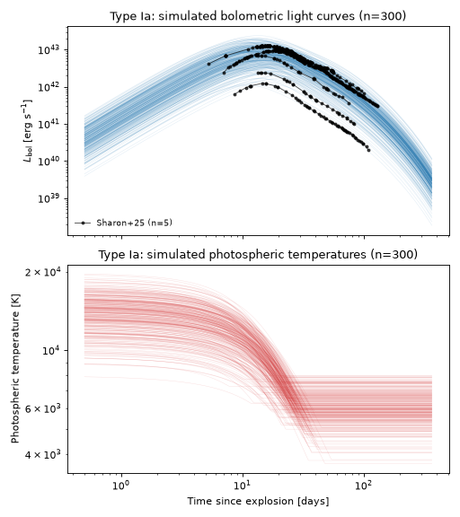
UV Calibration
The plots below overlay the Swift/UVOT UVW1 (2600 Å) and UVW2 (1928 Å) light curves of Type Ia supernovae from the Swift Optical/Ultraviolet Supernova Archive (SOUSA) on 100 random draws from the priors above, integrated through the corresponding UVOT transmission curve from the SVO Filter Profile Service. Both are shown as \(\nu L_\nu\) in the observed band with no K-correction. Archive supernovae are drawn at random, and the legend gives how many are shown. Only those with an estimated explosion date (black) are timed from explosion; the rest (grey) are timed from discovery, so they sit to the left of where the model places the same phase, by an amount that differs from event to event.
Type Ia is the best-sampled class in the archive (130 supernovae with at least four UVW1 detections and
105 with at least four UVW2 detections), and the line-blanketing parameters break_frequency and beta were
set against these two bands. Because the line blanketing leaves \(L_\mathrm{bol}(t)\) unchanged, it moves flux between
the UV and the optical, and the UV light curves are where it shows.
Median peak \(\nu L_\nu\) (log10, erg/s) of 3000 model draws at \(z=0.01\) against the Swift supernovae:
Quantity |
Swift |
Model |
|---|---|---|
UVW1 peak |
42.13 |
42.15 |
UVW2 peak |
41.58 |
41.60 |
UVW1 minus UVW2 |
0.55 |
0.55 |
UVM2 peak |
41.27 |
41.63 |
UVW1 minus UVM2 |
0.93 |
0.52 |
The first three rows were fit. The UVM2 rows were not, and are not matched: the model is too bright in UVM2 by about 0.35 dex, and no choice of the break and \(\beta\) fixes that, so it is a limit of a single smooth suppression above one break frequency. The colour does not depend on how bright the sample was selected but the level does, and the Swift supernovae are a brighter sample than the model’s. The model is also broader than the data (the 16th to 84th percentile of the UVW1 peak spans 0.9 dex against 0.5 dex). The UVOT bands do not reach the UVEX FUV band, so the calibration there is an extrapolation.
(Source code, png, hires.png, pdf)


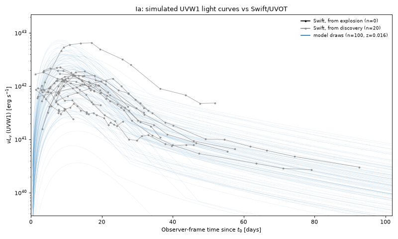
(Source code, png, hires.png, pdf)


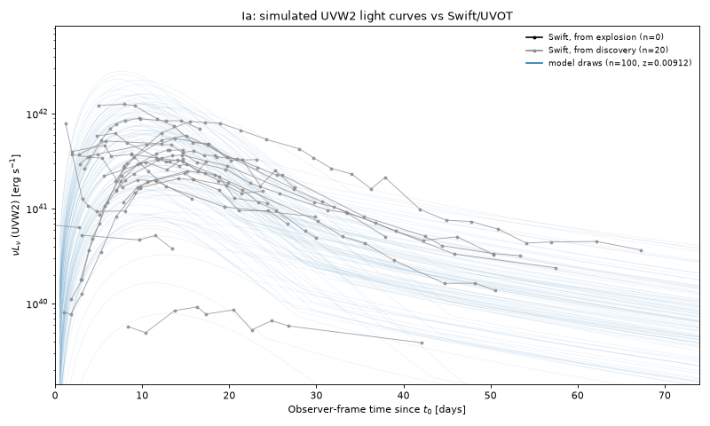
Luminosity Function
The distribution of peak absolute magnitude in the Johnson V band, from 10000 draws of the SED priors above. Each draw’s rest-frame band light curve is measured at its brightest point, with the host dust included. The curve is normalized per event, so it integrates to 1 over \(M_V\): multiply it by the rate to get a volumetric luminosity function, in events per comoving volume, time and magnitude. The shaded bands are the 68% (Clopper-Pearson) intervals of each bin, and bins with no events are not drawn. \(M_V\) is the AB magnitude at 10 pc of a spectrum flat in \(L_\nu\) that has the same Johnson V band luminosity, a fixed conversion of the luminosity rather than the photon-weighted magnitude of the SED itself.
The points are the luminosity function of SNe Ia of ASAS-SN, which the M_Ni and \(A_V\) priors were
tuned to (so this is a check of that tuning, not an independent test). Its rate has a normalization that is
not ours, so only its shape is compared: the points are scaled to unit area over the magnitudes they cover
and then by the fraction of the model’s events in that range. Where the shapes agree, the points lie on the
model’s curve. The model has too few events at the faint end (\(M_V\gtrsim-17.5\)), where the ASAS-SN
curve has a tail of subluminous events that a single Gaussian in M_Ni does not reproduce.
(Source code, png, hires.png, pdf)


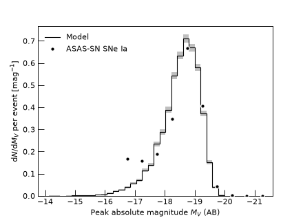
Observability Summary
The plots below show how the redshift limit follows from the SED. We draw 1000 sets of parameters from the priors above and evaluate each of them across a grid of redshifts, in the UVEX FUV and NUV bands, over the whole rest-frame light curve. The left panel shows each draw’s peak apparent AB magnitude, in whichever band is brighter, against redshift: a draw is detectable out to the redshift where its line crosses the UVEX 1 Dwell limit of \(m<24.5\). The right panel shows the redshift beyond which, with 95% confidence, at most 1% of the population is detectable, as a function of the magnitude limit. The redshift limit adopted above, \(z=0.24\), is its value at \(m=24.5\), rounded up and derived on a finer grid than this plot’s.
The limit bounds the fraction of the population that is detectable beyond it, not the fraction of detected events, and it does not include Milky Way extinction or sky position.
(Source code, png, hires.png, pdf)


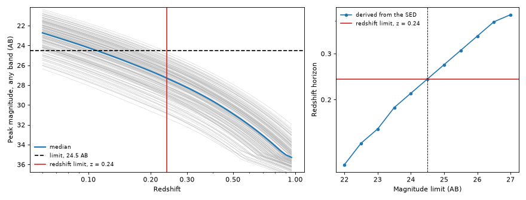
The anticipated rate of SNe Ia detectable by UVEX at this limit is as follows, assuming that any event above the \(m<24.5\) limit is detectable, and that the population is isotropic and homogeneous in comoving volume out to \(z=0.24\):
(Source code, png, hires.png, pdf)


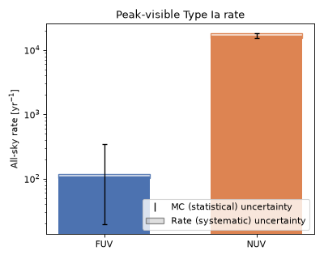
Implemented by TypeIbSNe, pairing
TypeIbSED with the rate/duration metadata
described below.
Quick Facts
Quantity |
Value |
Source |
Notes |
|---|---|---|---|
Rate |
\(R_\mathrm{CC}(z) = k\,\psi_\mathrm{UV}(z)\); Type Ib 10.8% of \(R_\mathrm{CC}(z)\) |
Strolger et al.[7], Madau and Dickinson[2], Shivvers et al.[8] |
Tracks the cosmic star-formation history. Shivvers et al.[8] find Ib is
\(35.6\pm11.4\%\) of the stripped-envelope (SESNe) rate, which is itself
\(30.4^{+5.0}_{-4.9}\%\) of the total core-collapse rate, so the Type Ib fraction
is \(0.356\times0.304=0.108\). Combined in quadrature with
Strolger et al.[7]’s \(+27\%/-31\%\) normalization uncertainty, this gives
|
Redshift limit |
\(z = 0.23\) |
– |
Redshift beyond which, with 95% confidence, at most 1% of events drawn from the SED’s priors are brighter than 24.5 AB (the UVEX 1 Dwell limit) in either UVEX band, rounded up. See the observability summary below. |
Duration |
100 days |
– |
Covers the rise, peak (\(t_p \approx 18\) d after explosion, prior median) and the decline. |
SED Model
Model Class: TypeIbSED
TypeIbSED reuses
LineBlanketedArnettDecaySED entirely (the same
\(L(t)\)/\(T(t)\) machinery and line-blanketed photosphere documented for Type Ia above), with a
single Ni-56 mass decaying through \(^{56}\mathrm{Ni}\to{}^{56}\mathrm{Co}\to{}^{56}\mathrm{Fe}\):
The priors on M_Ni, M_ej and v_ej follow the modified-Arnett fits to the 88 SNe Ib of the
volume-limited (< 150 Mpc) ZTF CLU + CATS150 sample [citation pending]. Each truncated normal is tuned
so that its 16th, 50th and 84th percentiles (after truncation) reproduce the CLU subtype
distribution, so its mean and sigma are fit parameters rather than the sample moments.
M_ej is the observed distribution scaled by the sample-wide 0.90 shift under the survey-efficiency
(\(1/\epsilon\)) weighting, and v_ej is the He I 5876 absorption velocity converted to the
characteristic velocity \(v_m=(2E_K/M_\mathrm{ej})^{1/2}\). M_Ni is a log-normal, median
\(0.06\,M_\odot\) and \(\sigma_{\ln}=0.7\), truncated to 0.005 to 1.5 \(M_\odot\). It replaces a
truncated normal tuned to the CLU nickel mass (efficiency-corrected median 0.093 \(M_\odot\)), which
put the peak absolute magnitudes in a narrow band where the ASAS-SN luminosity function is still
rising toward the faint end; many low-mass and few high-mass events is what that function needs. It is
set by comparison with the function, not fit to the CLU nickel masses. kappa is fixed at \(0.07\,\mathrm{cm^2\,g^{-1}}\), the
grey opacity that analysis uses to turn diffusion times into ejecta masses (the M_ej prior is
only consistent with that value). kappa_gamma is fixed at \(0.04\,\mathrm{cm^2\,g^{-1}}\),
comparable to Type Ia’s Scalzo+14-derived value, since the sample analysis fits a gamma-ray
trapping time per event rather than an opacity. T_floor is left close to Type Ia’s value.
break_frequency (\(1.4\times10^{15}\) Hz, about 2140 Å) and beta (3) are fixed, and were set
against the Swift/UVOT light curves of Type Ib and Ic together (see the UV calibration section below).
The SED is reddened by dust in the host galaxy, with the G23 law and a V-band attenuation \(A_V\) drawn from an exponential distribution with mean 0.6 mag (a plausible range for the mean is 0.3 to 1.0). \(R_V\) is the Type Ia prior (normal, \(2.70\pm0.25\), truncated to G23’s range of 2.3 to 5.6), which is not measured for stripped-envelope events. As for Type Ia, the dust is part of the model, so \(L_\mathrm{bol}(t)\) is the integral of the attenuated \(L_\nu\), and the luminosity function below includes it.
Parameter priors
Parameter |
Symbol |
Prior |
Notes / Source |
|---|---|---|---|
|
\(M_\mathrm{Ni}\) |
LogNormal(median 0.06, \(\sigma_{\ln}\)=0.7; bounds \([0.005, 1.5]\,M_\odot\)) |
Set against the ASAS-SN luminosity function, not the CLU nickel masses. 16 to 84%: 0.03 to 0.12 \(M_\odot\). |
|
\(M_\mathrm{ej}\) |
TruncatedNormal(2.3, \(\sigma\)=2.2; bounds \([0.1, 20]\,M_\odot\)) |
ZTF CLU SN Ib [citation pending]; observed 2.95 [1.3, 5.8] \(M_\odot\) scaled by 0.90 (prior: 2.75 [1.10, 4.76]). |
|
\(v_\mathrm{ej}\) |
TruncatedNormal(9.6, \(\sigma\)=3.5; bounds \([4, 25]\times10^3\ \mathrm{km\,s^{-1}}\)) |
ZTF CLU SN Ib [citation pending]; He I 5876 velocity proxy, median 9.84 (prior: 9.8 [6.7, 13.2]). |
|
\(\kappa\) |
Fixed, 0.07 \(\mathrm{cm^2\,g^{-1}}\) |
The grey opacity of the ZTF CLU analysis [citation pending], which the |
|
\(\kappa_\gamma\) |
Fixed, 0.04 \(\mathrm{cm^2\,g^{-1}}\) |
Not taken from the ZTF CLU sample, which fits a gamma-ray trapping time instead; comparable to Type Ia’s Scalzo et al.[5] value. |
|
\(T_\mathrm{floor}\) |
TruncatedNormal(5000 K, \(\sigma\)=1000 K; bounds \([3000, 10000]\) K) |
Same floor family as the other Arnett-based models on this site; not calibrated against Ib data specifically. |
|
\(\nu_\mathrm{break}\) |
Fixed, \(1.4\times10^{15}\) Hz |
Line-blanketing break frequency, set against Swift/UVOT (see below). Bounded below by the data. |
|
\(\beta\) |
Fixed, 3 |
Line-blanketing suppression index. Not constrained by the Swift/UVOT data (see below). |
|
\(A_V\) |
Exponential(mean 0.6 mag) |
V-band attenuation by host-galaxy dust. A plausible range for the mean is 0.3 to 1.0. |
|
\(R_V\) |
TruncatedNormal(2.70, \(\sigma\)=0.25; bounds \([2.3, 5.6]\)) |
Total-to-selective extinction ratio of the host dust; the Type Ia prior. |
Simulated Light Curves
The plot below draws 300 random parameter realizations from the priors above. The top panel shows the bolometric light curves, each shifted so that its own peak sits at zero, overlaid with the individual bolometric light curves of the Type Ib SNe in Lyman et al.[9], which are measured relative to maximum light; this checks the shape of the light curve (rise, peak width and decline) predicted by the Arnett diffusion model against an independent sample (the priors are fit to the ZTF CLU sample, not to these events). The bottom panel shows the floored-photosphere blackbody temperature against time since explosion, overlaid with the temperatures of the Type Ib SNe in Prentice et al.[10], shifted to time since explosion using the tabulated \(t_p\).
(Source code, png, hires.png, pdf)


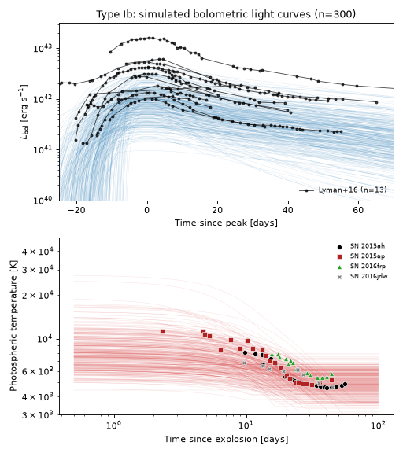
UV Calibration
The plots below overlay the Swift/UVOT UVW1 (2600 Å) and UVW2 (1928 Å) light curves of Type Ib supernovae from the Swift Optical/Ultraviolet Supernova Archive (SOUSA) on 100 random draws from the priors above, integrated through the corresponding UVOT transmission curve from the SVO Filter Profile Service. Both are shown as \(\nu L_\nu\) in the observed band with no K-correction. Archive supernovae are drawn at random, and the legend gives how many are shown. Only those with an estimated explosion date (black) are timed from explosion; the rest (grey) are timed from discovery, so they sit to the left of where the model places the same phase, by an amount that differs from event to event.
The line-blanketing parameters break_frequency and beta were set against the Swift supernovae of Type
Ib and Ic together, because the archive holds few of either (events with at least four detections: Ib 8 in
UVW1, 2 in UVM2 and 3 in UVW2; Ic 3, 1 and 2) and the two share their construction. As for Type Ia, they
were set by a coarse grid search, with the other priors fixed, so that the median peak \(\nu L_\nu\) in
UVW1 and UVW2, and the median UVW1 to UVW2 colour of the five events with both, match the pooled sample,
with the model’s Ib and Ic mixed in the proportions of the data. The previous values (\(0.75\times10^{15}\)
Hz and 5, the original Type Ia calibration) left the model 0.5 to 1 dex too faint in the UV bands.
Median peak \(\nu L_\nu\) (log10, erg/s) of 1500 draws of each model at \(z=0.01\) against the pooled Swift supernovae:
Quantity |
Swift |
Model, 0.75e15 Hz, 5 |
Model, 1.4e15 Hz, 3 |
|---|---|---|---|
UVW1 peak |
40.80 |
40.28 |
40.78 |
UVW2 peak |
40.60 |
39.62 |
40.24 |
UVW1 minus UVW2 |
0.50 |
0.67 |
0.55 |
UVM2 peak |
40.45 |
39.31 |
40.29 |
The first three rows were fit; UVM2 was not, and rests on three events. The data are not enough to determine both parameters. Any break above about \(1.4\times10^{15}\) Hz, with any \(\beta\), matches them about equally well, up to removing the blanketing from the UVOT bands altogether (the model’s UV is identical for every break above about \(1.8\times10^{15}\) Hz). So the data bound the break from below and do not constrain \(\beta\); the values adopted keep some suppression at the blue end, and the UVEX FUV band lies beyond the UVOT bands, so the calibration there is an extrapolation. The UVW2 peak is still 0.36 dex low even with no blanketing, which is one bootstrap standard deviation of the data median (0.34 dex). The Swift supernovae are a brighter sample than the model’s population, so the level carries that caveat, and the colour, which is the more robust of the two, has a standard deviation of 0.07 dex.
(Source code, png, hires.png, pdf)


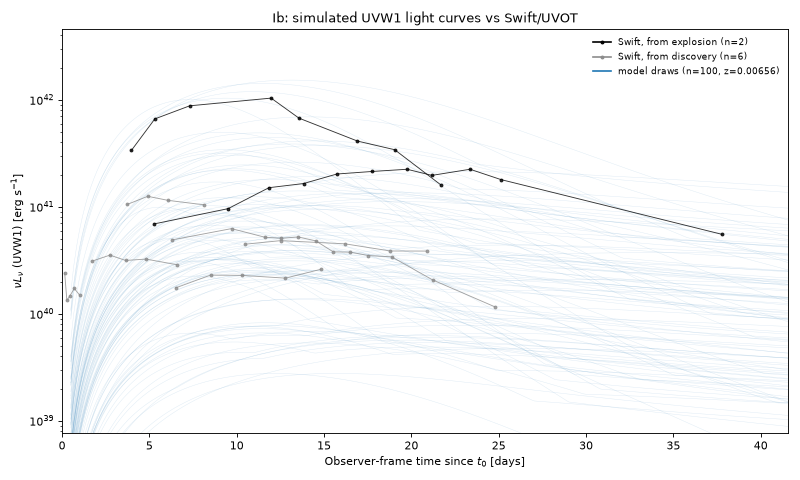
(Source code, png, hires.png, pdf)


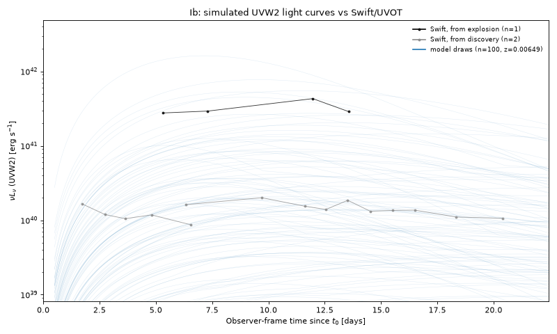
Luminosity Function
The distribution of peak absolute magnitude in the Johnson V band, from 10000 draws of the SED priors above. Each draw’s rest-frame band light curve is measured at its brightest point. The curve is normalized per event, so it integrates to 1 over \(M_V\): multiply it by the rate to get a volumetric luminosity function, in events per comoving volume, time and magnitude. The shaded bands are the 68% (Clopper-Pearson) intervals of each bin, and bins with no events are not drawn. \(M_V\) is the AB magnitude at 10 pc of a spectrum flat in \(L_\nu\) that has the same Johnson V band luminosity, a fixed conversion of the luminosity rather than the photon-weighted magnitude of the SED itself. The host dust is included.
The points are the luminosity function of SNe Ib of ASAS-SN, which the M_Ni prior was set against
(so this is a check of that choice, not an independent test). Its rate has a normalization that is not
ours, so only its shape is compared: the points are scaled to unit area over the magnitudes they cover
and then by the fraction of the model’s events in that range. Where the shapes agree, the points lie on
the model’s curve.
The model’s peak and faint side agree with the points, but it lies above them at
\(M_V\approx-16.6\) to \(-17.3\), and has no events as bright as the brightest point
(\(M_V\approx-19.9\)). The points do not constrain the model fainter than \(M_V\approx-15.4\),
where it has a tail.
(Source code, png, hires.png, pdf)


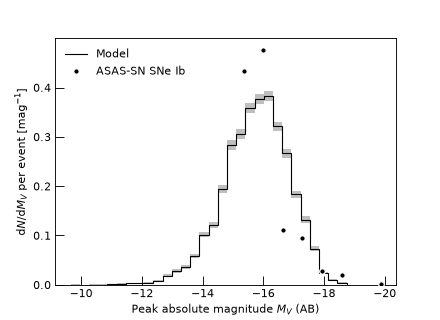
Observability Summary
The plots below show how the redshift limit follows from the SED. We draw 1000 sets of parameters from the priors above and evaluate each of them across a grid of redshifts, in the UVEX FUV and NUV bands, over the whole rest-frame light curve. The left panel shows each draw’s peak apparent AB magnitude, in whichever band is brighter, against redshift: a draw is detectable out to the redshift where its line crosses the UVEX 1 Dwell limit of \(m<24.5\). The right panel shows the redshift beyond which, with 95% confidence, at most 1% of the population is detectable, as a function of the magnitude limit. The redshift limit adopted above, \(z=0.23\), is its value at \(m=24.5\), rounded up and derived on a finer grid than this plot’s.
The limit bounds the fraction of the population that is detectable beyond it, not the fraction of detected events, and it does not include Milky Way extinction or sky position.
(Source code, png, hires.png, pdf)


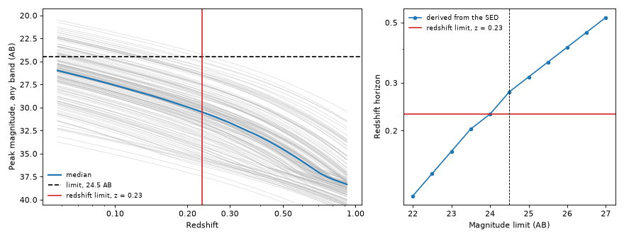
The anticipated rate detectable by UVEX at this limit is as follows, assuming that any event above the \(m<24.5\) limit is detectable, and that the population is isotropic and homogeneous in comoving volume out to its redshift limit:
(Source code, png, hires.png, pdf)


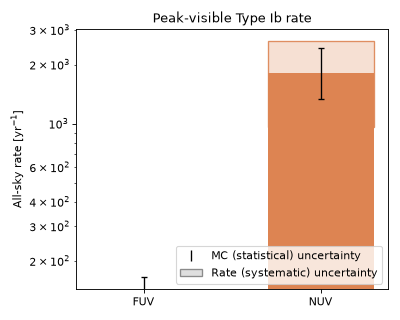
Implemented by TypeIcSNe, pairing
TypeIcSED with the rate/duration metadata
described below.
Quick Facts
Quantity |
Value |
Source |
Notes |
|---|---|---|---|
Rate |
\(R_\mathrm{CC}(z) = k\,\psi_\mathrm{UV}(z)\); Type Ic 6.5% of \(R_\mathrm{CC}(z)\) |
Strolger et al.[7], Madau and Dickinson[2], Shivvers et al.[8] |
Tracks the cosmic star-formation history. Shivvers et al.[8] find Ic is
\(21.5\pm8.6\%\) of the stripped-envelope (SESNe) rate, which is itself
\(30.4^{+5.0}_{-4.9}\%\) of the total core-collapse rate, so the Type Ic fraction
is \(0.215\times0.304=0.065\). Combined in quadrature with
Strolger et al.[7]’s \(+27\%/-31\%\) normalization uncertainty, this gives
|
Redshift limit |
\(z = 0.21\) |
– |
Redshift beyond which, with 95% confidence, at most 1% of events drawn from the SED’s priors are brighter than 24.5 AB (the UVEX 1 Dwell limit) in either UVEX band, rounded up. See the observability summary below. |
Duration |
100 days |
– |
Covers the rise, peak (\(t_p \approx 17\) d after explosion, prior median) and the decline. |
SED Model
Model Class: TypeIcSED
TypeIcSED shares its construction entirely
with Type Ib’s TypeIbSED (see its SED Model
section above for the \(F_\mathrm{decay}(t)\)/\(T(t)\) math and the reasoning behind
kappa, kappa_gamma and T_floor, and the line-blanketed photosphere with its fixed
break_frequency and beta, and the host dust), differing only in that M_ej and
v_ej are tuned to the 113 normal SNe Ic (Ic-BL excluded) of the same ZTF CLU + CATS150
sample [citation pending] instead of the Type Ib ones. M_Ni is the same log-normal as Type Ib,
and the host dust is the same (\(A_V\) exponential with mean 0.6 mag). For Ic the velocity is the O I 7774 absorption
velocity converted to \(v_m\), substantially faster than Fe II photospheric velocities.
Parameter priors
Parameter |
Symbol |
Prior |
Notes / Source |
|---|---|---|---|
|
\(M_\mathrm{Ni}\) |
LogNormal(median 0.06, \(\sigma_{\ln}\)=0.7; bounds \([0.005, 1.5]\,M_\odot\)) |
As Type Ib. Set against the ASAS-SN luminosity function, not the CLU nickel masses. |
|
\(M_\mathrm{ej}\) |
TruncatedNormal(2.2, \(\sigma\)=3.35; bounds \([0.1, 20]\,M_\odot\)) |
ZTF CLU SN Ic [citation pending]; observed 3.62 [1.4, 7.3] \(M_\odot\) scaled by 0.90 (prior: 3.34 [1.21, 6.19]). |
|
\(v_\mathrm{ej}\) |
TruncatedNormal(14.2, \(\sigma\)=3.6; bounds \([4, 25]\times10^3\ \mathrm{km\,s^{-1}}\)) |
ZTF CLU SN Ic [citation pending]; O I 7774 velocity proxy, median 14.2 (prior: 14.2 [10.6, 17.8]). |
|
\(\kappa\) |
Fixed, 0.07 \(\mathrm{cm^2\,g^{-1}}\) |
The grey opacity of the ZTF CLU analysis [citation pending], which the |
|
\(\kappa_\gamma\) |
Fixed, 0.04 \(\mathrm{cm^2\,g^{-1}}\) |
Not taken from the ZTF CLU sample, which fits a gamma-ray trapping time instead; comparable to Type Ia’s Scalzo et al.[5] value. |
|
\(T_\mathrm{floor}\) |
TruncatedNormal(6000 K, \(\sigma\)=1000 K; bounds \([3000, 10000]\) K) |
Same floor family as the other Arnett-based models on this site; not calibrated against Ic data specifically. |
|
\(\nu_\mathrm{break}\) |
Fixed, \(1.4\times10^{15}\) Hz |
Line-blanketing break frequency, set against Swift/UVOT (see below). Bounded below by the data. |
|
\(\beta\) |
Fixed, 3 |
Line-blanketing suppression index. Not constrained by the Swift/UVOT data (see below). |
|
\(A_V\) |
Exponential(mean 0.6 mag) |
V-band attenuation by host-galaxy dust. A plausible range for the mean is 0.3 to 1.0. |
|
\(R_V\) |
TruncatedNormal(2.70, \(\sigma\)=0.25; bounds \([2.3, 5.6]\)) |
Total-to-selective extinction ratio of the host dust; the Type Ia prior. |
Simulated Light Curves
The plot below draws 300 random parameter realizations from the priors above. The top panel shows the bolometric light curves, each shifted so that its own peak sits at zero, overlaid with the individual bolometric light curves of the Type Ic SNe in Lyman et al.[9], which are measured relative to maximum light; this checks the shape of the light curve (rise, peak width and decline) predicted by the Arnett diffusion model against an independent sample (the priors are fit to the ZTF CLU sample, not to these events). The bottom panel shows the floored-photosphere blackbody temperature against time since explosion, overlaid with the temperatures of the Type Ic SNe in Prentice et al.[10], shifted to time since explosion using the tabulated \(t_p\).
(Source code, png, hires.png, pdf)


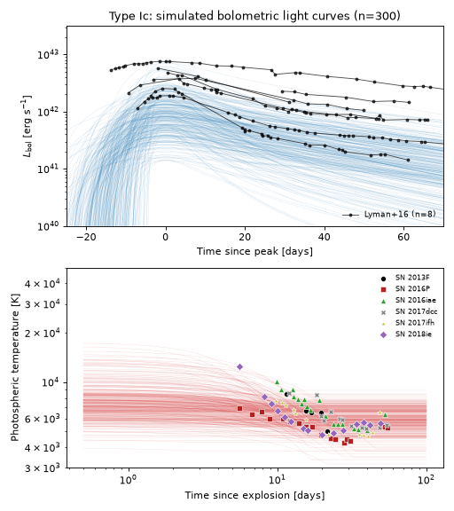
UV Calibration
The plots below overlay the Swift/UVOT UVW1 (2600 Å) and UVW2 (1928 Å) light curves of Type Ic supernovae from the Swift Optical/Ultraviolet Supernova Archive (SOUSA) on 100 random draws from the priors above, integrated through the corresponding UVOT transmission curve from the SVO Filter Profile Service. Both are shown as \(\nu L_\nu\) in the observed band with no K-correction. Archive supernovae are drawn at random, and the legend gives how many are shown. Only those with an estimated explosion date (black) are timed from explosion; the rest (grey) are timed from discovery, so they sit to the left of where the model places the same phase, by an amount that differs from event to event.
The line-blanketing parameters are those of Type Ib, which were set against Types Ib and Ic together (see its UV calibration section for the fit and for what the data do and do not constrain). The Swift sample is small: 6 Type Ic supernovae have at least three UVW1 detections, and 3 have at least three UVW2 detections. These plots are a consistency check on those values rather than a fit to Ic alone.
(Source code, png, hires.png, pdf)


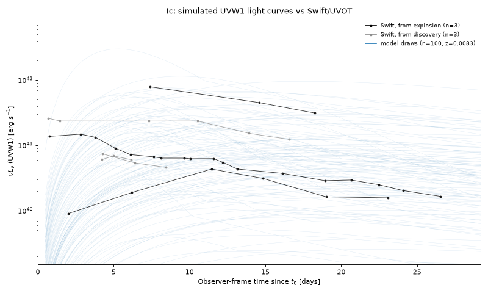
(Source code, png, hires.png, pdf)


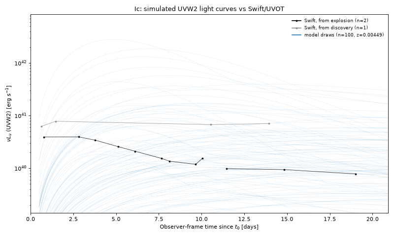
Luminosity Function
The distribution of peak absolute magnitude in the Johnson V band, from 10000 draws of the SED priors above. Each draw’s rest-frame band light curve is measured at its brightest point. The curve is normalized per event, so it integrates to 1 over \(M_V\): multiply it by the rate to get a volumetric luminosity function, in events per comoving volume, time and magnitude. The shaded bands are the 68% (Clopper-Pearson) intervals of each bin, and bins with no events are not drawn. \(M_V\) is the AB magnitude at 10 pc of a spectrum flat in \(L_\nu\) that has the same Johnson V band luminosity, a fixed conversion of the luminosity rather than the photon-weighted magnitude of the SED itself. The host dust is included.
The points are the luminosity function of SNe Ic of ASAS-SN, which the M_Ni prior was set against
(so this is a check of that choice, not an independent test). Its rate has a normalization that is not
ours, so only its shape is compared: the points are scaled to unit area over the magnitudes they cover
and then by the fraction of the model’s events in that range. Where the shapes agree, the points lie on
the model’s curve.
The model’s peak and faint side agree with the points, but its distribution ends near
\(M_V\approx-19.3\), short of the brightest point (\(M_V\approx-20.6\)). The points do not
constrain the model fainter than \(M_V\approx-15.4\), where it has a tail.
(Source code, png, hires.png, pdf)


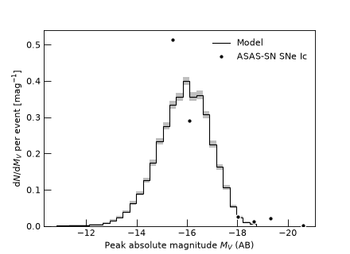
Observability Summary
The plots below show how the redshift limit follows from the SED. We draw 1000 sets of parameters from the priors above and evaluate each of them across a grid of redshifts, in the UVEX FUV and NUV bands, over the whole rest-frame light curve. The left panel shows each draw’s peak apparent AB magnitude, in whichever band is brighter, against redshift: a draw is detectable out to the redshift where its line crosses the UVEX 1 Dwell limit of \(m<24.5\). The right panel shows the redshift beyond which, with 95% confidence, at most 1% of the population is detectable, as a function of the magnitude limit. The redshift limit adopted above, \(z=0.21\), is its value at \(m=24.5\), rounded up and derived on a finer grid than this plot’s.
The limit bounds the fraction of the population that is detectable beyond it, not the fraction of detected events, and it does not include Milky Way extinction or sky position.
(Source code, png, hires.png, pdf)


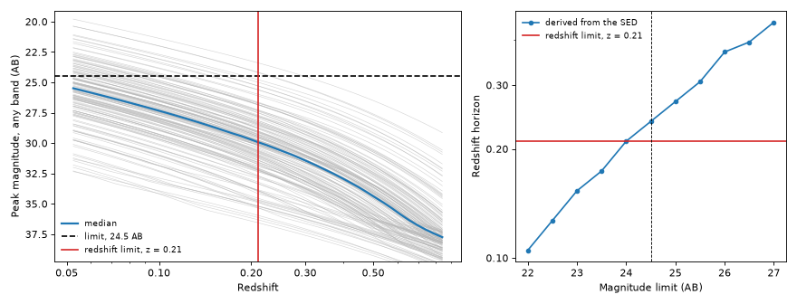
The anticipated rate detectable by UVEX at this limit is as follows, assuming that any event above the \(m<24.5\) limit is detectable, and that the population is isotropic and homogeneous in comoving volume out to its redshift limit:
(Source code, png, hires.png, pdf)


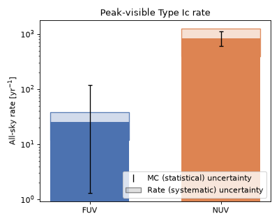
Type Ic-BL (broad-lined) supernovae are Type Ic explosions with unusually high kinetic energies and ejecta velocities, identified spectroscopically by their broad, blended absorption features. Like Type Ib/Type Ic above and Type Ia, this population’s SED follows the same first-principles Arnett-style radioactive-decay model. It is the Type Ic SED with its own nickel mass, ejecta mass and ejecta velocity, tuned to the Ic-BL events of the same ZTF CLU sample [citation pending].
Implemented by TypeIcBLSNe, pairing
TypeIcBLSED with the rate/duration
metadata described below.
Quick Facts
Quantity |
Value |
Source |
Notes |
|---|---|---|---|
Rate |
\(R_\mathrm{CC}(z) = k\,\psi_\mathrm{UV}(z)\); Type Ic-BL 1.1% of \(R_\mathrm{CC}(z)\) |
Strolger et al.[7], Madau and Dickinson[2], Shivvers et al.[8] |
Tracks the cosmic star-formation history. Shivvers et al.[8] find Ic-BL is
\(3.7^{+2.9}_{-3.7}\%\) of the stripped-envelope (SESNe) rate, which is itself
\(30.4^{+5.0}_{-4.9}\%\) of the total core-collapse rate, so the Type Ic-BL
fraction is \(0.037\times0.304=0.0112\). Combined in quadrature with
Strolger et al.[7]’s \(+27\%/-31\%\) normalization uncertainty, this gives
|
Redshift limit |
\(z = 0.32\) |
– |
Redshift beyond which, with 95% confidence, at most 1% of events drawn from the SED’s priors are brighter than 24.5 AB (the UVEX 1 Dwell limit) in either UVEX band, rounded up. See the observability summary below. |
Duration |
100 days |
– |
Covers the rise, peak and decline, matching Type Ib/Type Ic. |
SED Model
Model Class: TypeIcBLSED
TypeIcBLSED reuses
LineBlanketedArnettDecaySED entirely (the same
\(L(t)\)/\(T(t)\) machinery and line-blanketed photosphere documented for Type Ia above, and
for the SLSNe-I model in Superluminous Supernovae (SLSNe-I)):
The priors on M_Ni, M_ej and v_ej are tuned to the Ic-BL events of the volume-limited ZTF CLU +
CATS150 sample [citation pending], as for Type Ib (each truncated normal is tuned so that its 16th, 50th and
84th percentiles, after truncation, reproduce the sample’s): M_Ni has median \(0.19\,M_\odot\) and a
16th to 84th percentile range of 0.093 to 0.29; M_ej is the observed median of about
\(3.2\,M_\odot\) (1.3 to 5.4) scaled by 0.90, the sample-wide shift under survey-efficiency weighting;
and v_ej is \(16.8\times10^3\) km/s with a width of \(3.5\times10^3\) km/s. The M_Ni is not the
log-normal of Types Ib and Ic, which was set against the ASAS-SN luminosity function of those types. Before
this, the three priors were sample statistics of the 36-event explosion-property table of
Srinivasaragavan et al.[11] (v_ej there has a mean of \(20.1\times10^3\) km/s).
Every other prior is that of Type Ic: kappa is \(0.07\,\mathrm{cm^2\,g^{-1}}\), kappa_gamma is
\(0.04\,\mathrm{cm^2\,g^{-1}}\) (it was 1000, for full gamma-ray trapping, before), T_floor is the
same, the line blanketing is that set against Swift/UVOT on the Type Ib tab, and the SED is reddened by host
dust with \(A_V\) exponential with mean 0.6 mag.
Parameter priors
Parameter |
Symbol |
Prior |
Notes / Source |
|---|---|---|---|
|
\(M_\mathrm{Ni}\) |
TruncatedNormal(0.183, \(\sigma\)=0.106; bounds \([0.005, 1.5]\,M_\odot\)) |
ZTF CLU SN Ic-BL [citation pending]; median 0.19 \(M_\odot\) (prior: 0.189 [0.093, 0.291]). |
|
\(M_\mathrm{ej}\) |
TruncatedNormal(2.47, \(\sigma\)=2.22; bounds \([0.1, 20]\,M_\odot\)) |
ZTF CLU SN Ic-BL [citation pending]; observed 3.2 [1.3, 5.4] \(M_\odot\) scaled by 0.90 (prior: 2.87 [1.18, 4.89]). |
|
\(v_\mathrm{ej}\) |
TruncatedNormal(16.8, \(\sigma\)=3.5; bounds \([5, 30]\times10^3\ \mathrm{km\,s^{-1}}\)) |
ZTF CLU SN Ic-BL [citation pending]; velocity proxy, median 16.8. |
|
\(\kappa\) |
Fixed, 0.07 \(\mathrm{cm^2\,g^{-1}}\) |
As Type Ic: the grey opacity of the ZTF CLU analysis [citation pending]. |
|
\(\kappa_\gamma\) |
Fixed, 0.04 \(\mathrm{cm^2\,g^{-1}}\) |
As Type Ic; comparable to Type Ia’s Scalzo et al.[5] value. |
|
\(T_\mathrm{floor}\) |
TruncatedNormal(6000 K, \(\sigma\)=1000 K; bounds \([3000, 10000]\) K) |
As Type Ic; not calibrated against Ic-BL data specifically. |
|
\(\nu_\mathrm{break}\) |
Fixed, \(1.4\times10^{15}\) Hz |
Line-blanketing break frequency, as Type Ic (set against Swift/UVOT on the Type Ib tab). |
|
\(\beta\) |
Fixed, 3 |
Line-blanketing suppression index, as Type Ic. Not constrained by the data. |
|
\(A_V\) |
Exponential(mean 0.6 mag) |
V-band attenuation by host-galaxy dust, as Type Ic. |
|
\(R_V\) |
TruncatedNormal(2.70, \(\sigma\)=0.25; bounds \([2.3, 5.6]\)) |
Total-to-selective extinction ratio of the host dust, as Type Ic. |
Simulated Light Curves
The plot below draws 300 random parameter realizations from the priors above. The top panel shows the bolometric light curves, each shifted so that its own peak sits at zero, overlaid with the 8 Type Ic-BL SNe of Lyman et al.[9], whose times are measured relative to maximum light, and with the 26 Type Ic-BL SNe of Srinivasaragavan et al.[11] with a full explosion-property fit, shifted to their own peaks. This checks the shape of the light curve (rise, peak width and decline) and its peak luminosity against independent samples (the priors above are tuned to the ZTF CLU sample, not to these events). No photospheric temperature data is bundled for Type Ic-BL, so the bottom panel, the floored-photosphere blackbody temperature against time since explosion, is unadorned.
The model peaks fainter than both observed samples: its median peak \(\log_{10}L_\mathrm{bol}\) is 42.46 against 42.87 for the Srinivasaragavan et al. events and about 42.9 for those of Lyman et al., and both are literature samples that favour bright events. After peak the model’s median decline matches the Lyman et al. events with the gamma-ray opacity of Type Ic (\(\kappa_\gamma=0.04\,\mathrm{cm^2\,g^{-1}}\): 0.98 dex below peak at 60 d against their 1.00, from three events), but is steeper than the Srinivasaragavan et al. light curves, which are fits and decline like a fully trapped \(^{56}\mathrm{Co}\) tail (0.55 dex at 60 d); a \(\kappa_\gamma\) of 0.2 or more would be needed to match them, which is not physical for \(^{56}\mathrm{Co}\) gamma rays.
(Source code, png, hires.png, pdf)


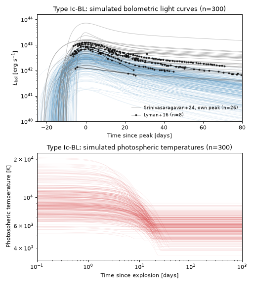
UV Calibration
The plots below overlay the Swift/UVOT UVW1 (2600 Å) and UVW2 (1928 Å) light curves of Type Ic-BL supernovae from the Swift Optical/Ultraviolet Supernova Archive (SOUSA) on 100 random draws from the priors above, integrated through the corresponding UVOT transmission curve from the SVO Filter Profile Service. Both are shown as \(\nu L_\nu\) in the observed band with no K-correction. Archive supernovae are drawn at random, and the legend gives how many are shown. Only those with an estimated explosion date (black) are timed from explosion; the rest (grey) are timed from discovery, so they sit to the left of where the model places the same phase, by an amount that differs from event to event.
The line-blanketing parameters are those of Type Ic, which were set against Types Ib and Ic together (see the Type Ib tab). Only two Type Ic-BL supernovae have at least three detections in either band, so this is the least constrained comparison on this page, and the model should not be read as a fit to the Type Ic-BL UV light curves.
(Source code, png, hires.png, pdf)


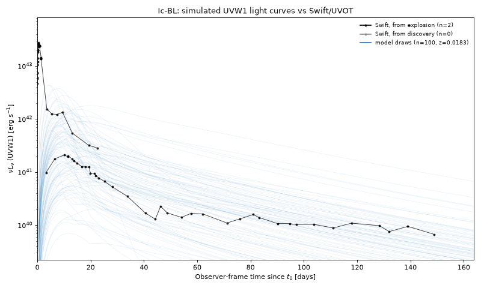
(Source code, png, hires.png, pdf)


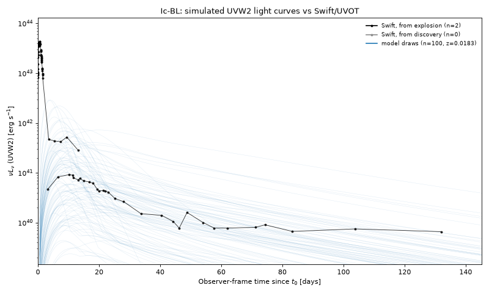
Luminosity Function
The distribution of peak absolute magnitude in the Johnson V band, from 10000 draws of the SED priors above. Each draw’s rest-frame band light curve is measured at its brightest point. The curve is normalized per event, so it integrates to 1 over \(M_V\): multiply it by the rate to get a volumetric luminosity function, in events per comoving volume, time and magnitude. The shaded bands are the 68% (Clopper-Pearson) intervals of each bin, and bins with no events are not drawn. \(M_V\) is the AB magnitude at 10 pc of a spectrum flat in \(L_\nu\) that has the same Johnson V band luminosity, a fixed conversion of the luminosity rather than the photon-weighted magnitude of the SED itself.
(Source code, png, hires.png, pdf)


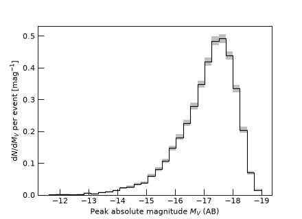
Observability Summary
The plots below show how the redshift limit follows from the SED. We draw 1000 sets of parameters from the priors above and evaluate each of them across a grid of redshifts, in the UVEX FUV and NUV bands, over the whole rest-frame light curve. The left panel shows each draw’s peak apparent AB magnitude, in whichever band is brighter, against redshift: a draw is detectable out to the redshift where its line crosses the UVEX 1 Dwell limit of \(m<24.5\). The right panel shows the redshift beyond which, with 95% confidence, at most 1% of the population is detectable, as a function of the magnitude limit. The redshift limit adopted above, \(z=0.32\), is its value at \(m=24.5\), rounded up and derived on a finer grid than this plot’s.
The limit bounds the fraction of the population that is detectable beyond it, not the fraction of detected events, and it does not include Milky Way extinction or sky position.
(Source code, png, hires.png, pdf)


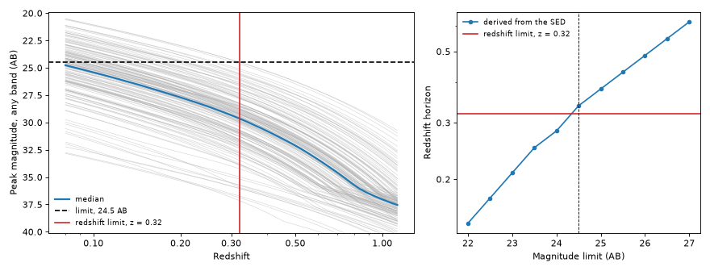
The anticipated rate detectable by UVEX at this limit is as follows, assuming that any event above the \(m<24.5\) limit is detectable, and that the population is isotropic and homogeneous in comoving volume out to its redshift limit:
(Source code, png, hires.png, pdf)


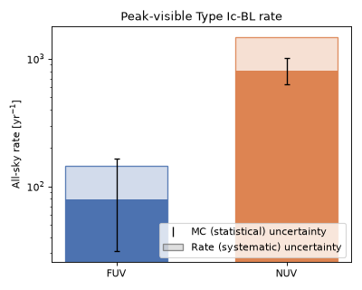